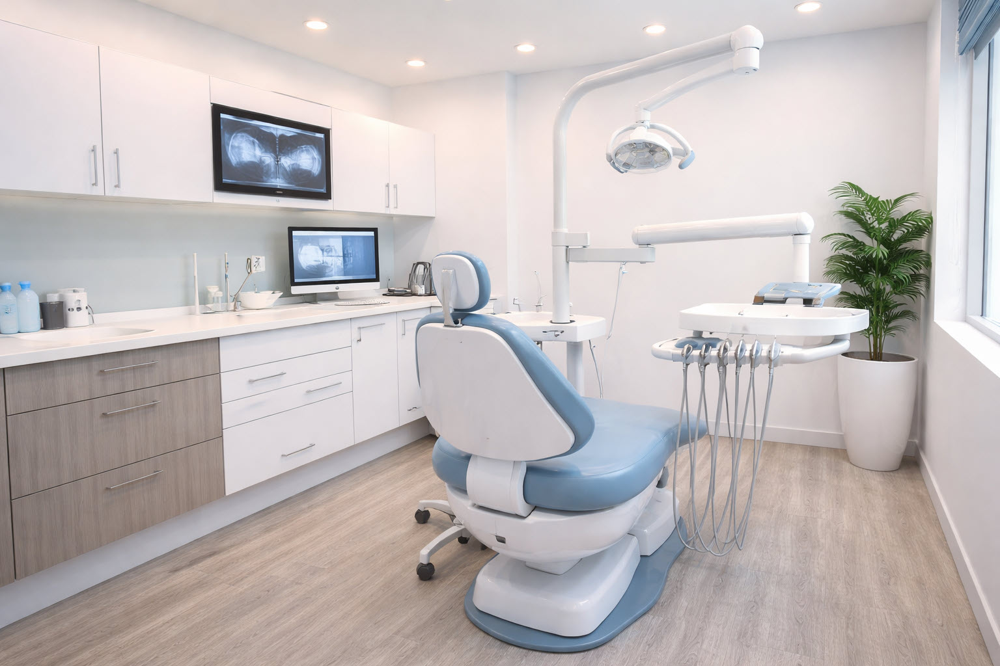

Odontología General · Manizales
Un espacio pensado para cuidar su salud oral con criterio, orientación personalizada y procedimientos realizados con claridad desde la primera valoración.
Atención en Manizales · Valoración personalizada · Enfoque integral en salud oral
Conozca al Doctor
El Dr. Mateo Salazar es odontólogo general con experiencia en atención integral de pacientes adultos y jóvenes. Su enfoque combina diagnóstico claro, procedimientos bien explicados y acompañamiento profesional en cada etapa del tratamiento.
Su filosofía de atención se basa en escuchar cada caso, ofrecer opciones comprensibles y brindar un servicio responsable, humano y orientado a la prevención y al bienestar oral a largo plazo.
Servicios Odontológicos
Cada servicio está orientado a cuidar su salud oral con una atención clara, profesional y adaptada a las necesidades de cada paciente.
Evaluación inicial para identificar el estado general de la salud oral, resolver dudas y definir el tratamiento más adecuado según cada caso.
Consultar este servicio →Procedimientos preventivos orientados a mantener una buena salud oral, reducir riesgos y fortalecer hábitos de cuidado a largo plazo.
Consultar este servicio →Tratamientos diseñados para recuperar función y estética en piezas afectadas, utilizando materiales adecuados y una valoración previa responsable.
Consultar este servicio →Acompañamiento profesional en molestias frecuentes, control oral, seguimiento y orientación para el cuidado diario de dientes y encías.
Consultar este servicio →Cómo Funciona
Cada paciente recibe una atención organizada y clara, con un proceso diseñado para comprender su caso, orientar adecuadamente el tratamiento y facilitar su seguimiento.
El paciente se comunica por WhatsApp para resolver dudas básicas y agendar su valoración.
Se realiza una revisión clínica para identificar necesidades, síntomas y opciones de manejo.
Se explica el tratamiento recomendado de forma clara, con orientación según el caso y los objetivos del paciente.
Se acompaña al paciente en el proceso indicado y se brindan recomendaciones para su cuidado oral.
¿Por qué elegir al Dr. Salazar?
Cada caso se explica de forma comprensible para que el paciente entienda su situación y las opciones disponibles.
El tratamiento se orienta según las necesidades reales de cada paciente, con cercanía y criterio profesional.
Además de tratar molestias puntuales, se promueve el cuidado continuo y la prevención de futuros problemas.
La información se entrega con claridad, sin tecnicismos innecesarios y con respeto por las decisiones del paciente.
Desde la valoración hasta el seguimiento, la atención mantiene orden, claridad y compromiso profesional.
Experiencias de Pacientes
"Me sentí muy bien orientada desde la primera cita. Todo fue explicado con claridad y el trato fue muy profesional."
"Valoro mucho la puntualidad, la atención y la forma en que resolvieron mis dudas. Me transmitieron confianza."
"Encontré una atención cercana, respetuosa y muy clara. Fue una experiencia positiva de principio a fin."
Preguntas Frecuentes
Puede agendar su cita directamente por WhatsApp. Allí recibirá orientación inicial y disponibilidad de atención.
En la primera cita se revisa el estado general de su salud oral, se identifican necesidades y se explican las opciones de atención.
No. También se atienden controles, limpieza, molestias frecuentes y tratamientos generales según cada paciente.
Sí. La idea es que el paciente comprenda su caso y pueda tomar decisiones con información clara y acompañamiento profesional.
La valoración clínica se realiza de forma presencial. Sin embargo, algunas dudas iniciales pueden resolverse previamente por WhatsApp.
Ubicación
Dirección
Edificio Torre Médica El Cable, Consultorio 504
Manizales, Caldas
Horarios
Lunes a Viernes: 8:00 AM – 6:00 PM
Sábados: 8:00 AM – 1:00 PM
Contacto
+57 316 785 0234

Un espacio diseñado para cuidar su salud oral con claridad, criterio profesional y orientación personalizada desde el primer contacto.